Here are descriptions of some of the more interesting or significant
changes made to Xtext for the Helios release of Eclipse, grouped by the
different milestones:
Xtext now fully supports case-insensitive languages: In addition to case-insensitive
keywords, which was already introduced in an earlier milestone, Xtext now also supports case-insensitive
linking.
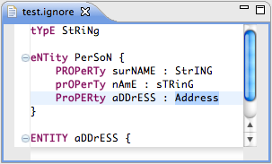
Performance Improvements: Linking
The performance of linking has been improved significantly. The scopes are now cached and
use Maps internally. As a result, scope providers perform up to 40 times faster now.
Also the builder is scheduled less often. Wooosh! :-)
ConcreteSyntaxValidator Improvements
The ConcreteSyntaxValidator is now enabled by default during serialization. It provides
much more comprehensible error messages than the serializer itself.
The ConcreteSyntaxValidator can also be registered as an EMF EValidator and thereby
integrates with existing EMF-based applications.
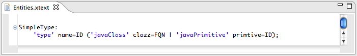
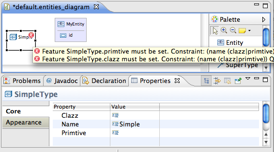
Fixes: Serializer
There have been many fixes and new capabilities in the serializer. For example,
comments are now associated with EObjects from your semantic model. This
becomes handy when comments in your language are not part of the EMF model
and you modify it programmatically, like in a quickfix.
Also enum literals and datatype values are now strictly checked and considered
during backtracking. Serialization will only be successful if the literal or
value is allowed at this position in the grammar.
In addition types are now strictly checked during serialization, resolving some former
type confusion issues.
Fixes: Content Assist
The computation of valid proposals has been improved. The algorithm
provides better results for grammars which require a large dynamic
lookahead. All available generated method stubs that allow to customize
the list of proposals are now called at the right time. The improvements
affect the template proposal as well as they have been refactored to use
the same logic as the normal content proposals.
Fixes: Encoding
We have revised and fixed the handling of character encoding in various places.
Users can now implement an encoding provider for their language, choosing a fixed or a
file dependent strategy. The outline will show special characters correctly. You can
also explicitly set the encoding for the generated files.
The QuickFix API has been refactored to better separate UI
and execution aspects. It now enables you to implement your own
QuickFixes for linking and/or validation errors. The actual fix
can be implemented on the textual level as well as in terms of
AST modifications.
On top of that API, Xtext now offers generic QuickFixes for
broken cross references. It uses the ScopeProvider to calculate
candidates and even supports slightly misspelled names.
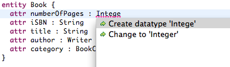
Quick Outline
If you press CTRL+O in your Xtext editor the Quick Outline
will pop up, providing you a volatile outline view with search
and navigation capabilities similar to JDT.
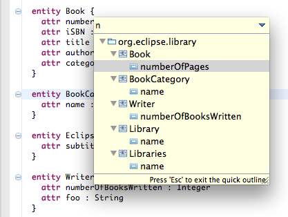
Unordered Groups
The Xtext grammar language now offers a new operator '&'
to separate elements in a group that can only occur once but in
any order, like the modifier keywords 'public', 'static',
'synchronized' in Java.
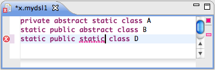
Support for Java Annotations in Common Types Metamodel
When referencing Java elements from your DSL using the common
types metamodel, you can now also access their Java Annotations.
Derive Grammar from Ecore
With a given .ecore file one can now create a new Xtext
project that contains a first draft of a matching grammar.
Even though these languages are far from being perfect they
might offer a good starting point.
Validation of Serializability
Xtext now has a ConcreteSyntaxValidator that checks
whether a model is serializable with respect to the grammar.
Use this feature to make sure your saved model can be
reparsed when you are using the EMF API to modify an Xtext model.
Refactoring of ILabelProviders
The API for the ILabelProviders has been cleaned up. The base
class AbstractLabelProvider automatically converts between styled
and simple labels. You can also bind different label providers
for each usage scenario (outline, content assist, etc.) by means
of binding annotations. Xtext provides default label provider
implementations for EObjects, EObjectDescriptions and
IEditorInputs.
By default any elements which are represented over multiple lines are foldable.
However this strategy can be arbitrarily changed for any language.
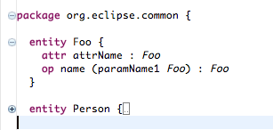
Bracket matching
Bracket matching behaves like in JDT, where you get an indication in the editor where the opposite bracket is located.
Also the navigation shortcut is the same as in JDT (CTRL+SHIFT+P). By default bracket matching is registered for curly, squared and normal parenthesis.
But this can be easily changed.
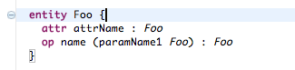
Auto Editing
Auto editing helps with things like automatically adding closing parenthesis for any opened ones, increasing the level of indentation or
can be used to add textual shortcuts. Xtext now provides a default implementation which supports the usual suspects. In addition there are a couple of configurable
edit strategies one can use and configure as it seems fit. If they don't fit just implement your very own strategy (just one method).
Styled Label Provider
The Label Provider now supports StyledStrings which can be used to style the labels of your model elements.
The styling is shown in content assist as well as the outline view.
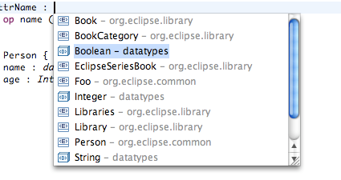
Find References
Find References (i.e. CTRL+SHIFT+G) is now supported. It can be applied to any declaration or reference and shows all references of the element in question.
Open Xtext Element
Open Xtext Element (i.e. CTRL+SHIFT+Z) acts similar to Open Resource or JDT's Open Type but works on elements of any language created with Xtext instead.
The dialog allows you to navigate to previously indexed elements by name and/or type.
Common filter expressions such as wild cards are supported, too.
Error Tick
The editor icon of each Xtext-based editor now shows whether its content contains errors or warnings.
This even works with files that haven't yet been saved or those affected by unsaved content of another editor (see DirtyResource).
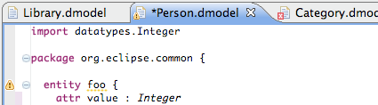
ProjectBuilder
Implementors of IXtextBuilderParticipant can perform additional steps during the build process.
The domain model sample implements incremental code generation this way as seen below.
New workflow reader
The new MWE reader component org.eclipse.xtext.mwe.Reader allows you to scan for model elements on the classpath or a given set of directories.
From there you can select elements of a given type and put them into a model slot.
This approach reflects the idea of namespaces at generation time you already had inside the Xtext editors while editing.
The new builder infrastructure allows for real IDE feel. All
files of all Xtext languages are indexed by that infrastructure. Based
on that information you get automatic transitive revalidation of
affected resources and support for file agnostic (i.e. name-based) referencing of
elements. By default the definition of what is visible is based on the
class-path of the Java projects in your workspace, but this is fully customizable.
DirtyResource
Working against the builder state (i.e. index) is great, but
you ultimately want to have that state shadowed by any dirty editors.
This is as well automatically available and works even better than in JDT :-).
Quickfix Support
It is now possible (and very easy) to provide quick fix solutions for
issues. The new Quickfix API is aligned to the new Validation API (see below).
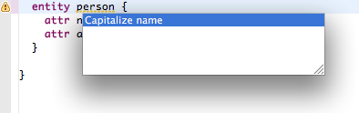
Case-insensitive keywords
A new option in the ANTLR generator fragment allows to make any
keywords case insensitive, like it is required by languages such as
SQL.
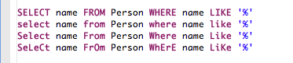
Duplicate names validation
You'll now get error markers for duplicate names.
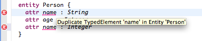
Content Assist in Grammar Editor I
In the Xtext grammar editor, you get proposals for the features
available for the current EClass. This works with both imported as
well as generated EClass. For generated EClasses only already used
features are proposed, of course :-)
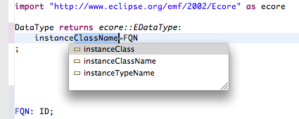
Content Assist in Grammar Editor II
Code completion for EClass references now works with qualified
names as well. The short cut syntax you see in the following snippet
works for any language.
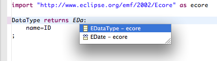
Applied:
Splitting of generated ANTLR lexers and parser
There are a couple of situations when the Java methods generated by ANTLR's parser generator
get too large for the VM (Methods in Java are restricted to 64k in the byte code).
With this new parser generator fragment option, the generated methods are automatically split up to solve this
problem.
New API: ResourceServiceProvider Registry
The new IResourceServiceProvider.Registry is the central point
to get different Xtext specific services for a given URI (and/or EMF
content type). The whole API is designed symmetrical to EMF's
Resource.Factory.Registry. An IResourceServiceProvider provides services for
validation, resource descriptions and container managers.
New API: Validation API
Validation of Xtext resources is now triggered through
IResourceValidator, which acts as a facade over syntax errors, linking
errors, as well as any Issues reported through EMF's EValidator API.
Validation rules are still declared as in 0.7.2.
New API: ResourceDescription
An IResourceDescription provides an abstract view of an EMF
Resource, containing information about the resource, its contained
cross links and the exported elements (IEObjectDescription). An
IEObjectDescription is created for any EObject which is referable
from outside.
Change: Scoping (Local vs. Global)
IEObjectDescription are also used in the scoping API (they
replaced IScopedElement). In addition we separate between local and
global scope providers. Local scope providers are responsible for
linking elements contained in the local resource and do name aliasing
(i.e. namespace imports, etc.). Global scopes are used to describe
what's visible outside the current resource.
Previously the editor created resource markers when ever a constrain was validated or
a syntax error occurred. This not only binds the editor to the resources bundle, but also
makes the lifecycle of markers complicated as soon as you start working with a builder.
Since M3 the editor only creates annotations in the editor, and leave it to the builder
to create persistent resource markers on save. This is similar to how JDT handles markers
and annotations.
Error markers for left-recursive Grammars
Xtext is based on ANTLR, which is an LL-parser generator. LL grammars have a lot of advantages (
more readable, simpler error recovery, etc.) but it is not allowed to write left recursive grammars.
If you have such a left recursion you'll get notified through a marker.
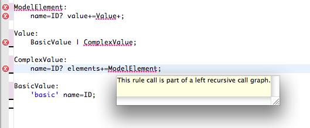
Lexer improvements (white space aware, rich strings)
In Xtext we use lexers and parsers not only to instantiate the model, but also to drive
syntax coloring or content assist. It is now possible to bind different implementations
to the different components. This makes implementing whitespace aware or template-like languages
much easier.
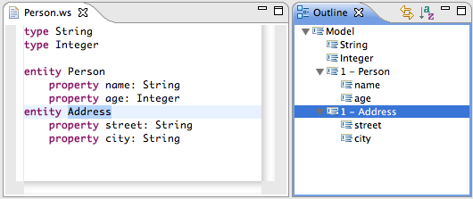
After indentation:
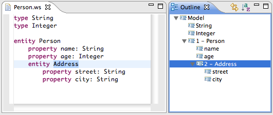
Template-like syntax:
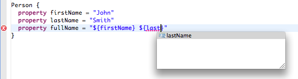
QualifiedName Support
Previously the default linking was based on simple names. The new default scope provider
is a bit more sophisticated and automatically derives qualified names, as well as
supports (nested) imports. Also wildcard imports are supported out-of-the box, given that you
have a corresponding syntax in your language.
If you write little DSLs within your software project, you most of the time want them to integrate with
your target language. Given that we work on the JVM most of the time and the JVM is
well supported platform, we added support for referencing JVM elements from any Xtext language.
This is done by providing a thin EMF based facade over the JVM type system, which is backed up by
classloaders or by the JDT, depending on whether you work in runtime-mode or in the IDE.
Semantic Highlighting for unused rules.
Any unused rules in your grammar are now grayed out in order to indicate that this.
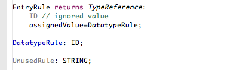
Extensible Project Wizard
The project wizard generates a special configuration for Xtext's generator (i.e. a fixed set of fragments).
It is now possible to contribute alternative configurations through an extension point.
Change: Scoping getContentByName(String)
Since linking always looks up referable elements by name, it made sense to
have such a method in the scoping API in order to allow optimized implementations.